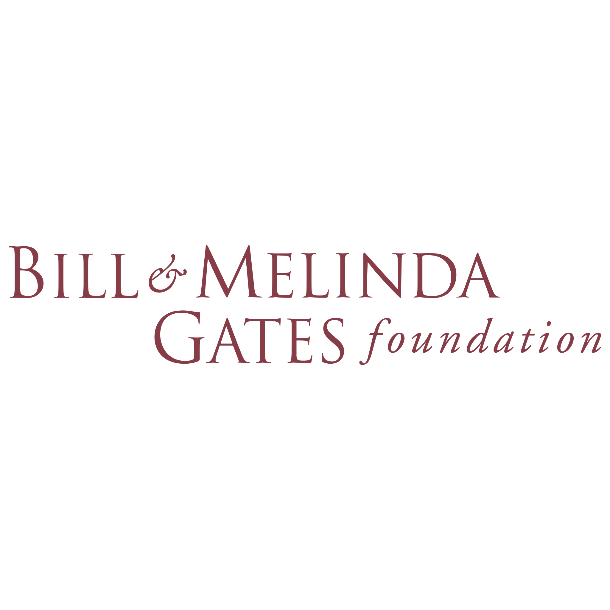
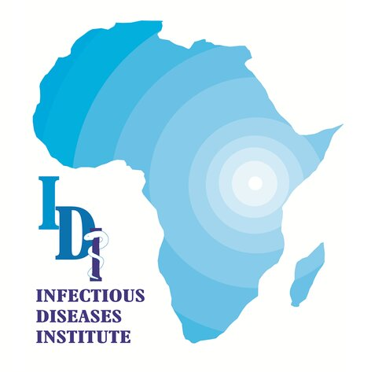

How I can help
AI Strategy & Roadmapping
A clear, actionable AI strategy aligned with your organization's goals—avoiding common LMIC pitfalls and delivering measurable results.
End-to-End AI Development
From data collection to deployment: custom AI/ML models and full-stack applications designed for the operational realities of your environment.
Data Infrastructure & Engineering
Foundational data pipelines and platforms—governance, FAIR principles, and systems that turn fragmented data into a strategic asset.
Training & Capacity Building
Empowering your local teams with the skills to manage and sustain AI solutions independently, ensuring long-term impact.
Featured projects
Multilingual Health AI for Frontline Workers
HEAL Project
Problem: Frontline workers couldn't access critical guidelines quickly, especially in local languages, creating dangerous delays in patient care.
Solution: Led an 8-person team to build a multilingual application—full AI lifecycle from data curation and LLM tuning to deployment in English and Luganda.
Impact: Instant, accurate health information empowering health workers to make faster, better-informed clinical decisions.
Continent-Wide Open Data Science Platform
eLwazi Platform — DS-I Africa
Problem: Critical health data was trapped in institutional silos, preventing large-scale collaborative research needed to tackle continent-wide challenges.
Solution: Co-led the data workstream for the central platform serving 38 projects across 22 African countries—designed and deployed the core infrastructure.
Impact: Technical foundation for an $88M research ecosystem, pioneering FAIR data standards for Africa.
National AI Chatbot for COVID-19 Response
Makerere University & ACE
Problem: Health authorities overwhelmed by 50,000+ daily COVID inquiries while IVR systems failed and misinformation spread rapidly.
Solution: As technical lead, directed a 7-person team to architect a national AI chatbot using a microservices architecture handling 15,000+ concurrent users.
Impact: Over 200,000 citizen queries processed, reducing burden on healthcare workers and providing 24/7 reliable information.
Ethical AI for Clinical Decision Support
Infectious Diseases Institute (IDI)
Problem: Providers needed real-time decision support but were hampered by complex data and concerns over ethical AI implementation.
Solution: As Principal Project Lead, steered a team of 7 to design and build a full-stack, ethical AI-powered Decision Support System serving 15+ health facilities.
Impact: 10,000+ patient records processed monthly, improving clinical decision accuracy by 40%.
Turning data into health impact
Research institutions and healthcare organizations across Africa are sitting on goldmines of critical health data—millions of patient records, genomic sequences, epidemiological surveys, and clinical trial results—yet this treasure trove remains largely untapped.
They face a perfect storm: rapidly growing datasets, limited local expertise, inadequate infrastructure, and urgent health challenges that require immediate, data-driven solutions.
Meanwhile, critical decisions about disease prevention, treatment protocols, and resource allocation are still being made with incomplete information, while the answers lie buried in their own data warehouses.
The solution isn't just about importing generic AI models. It's about building AI solutions designed for African realities—systems that work with limited connectivity, respect diverse health practices, and integrate with existing infrastructure without requiring massive overhauls.
From leading data catalog development at the Uganda Virus Research Institute to building scalable ML solutions with ACE Bioinformatics, my work spans clinical decision support systems to pandemic preparedness platforms—always with a focus on responsible and impactful AI.
The result is a future where data doesn't just sit in a warehouse—it saves lives. If you are ready to unlock the potential of your data, let's talk.
Funders & partners

